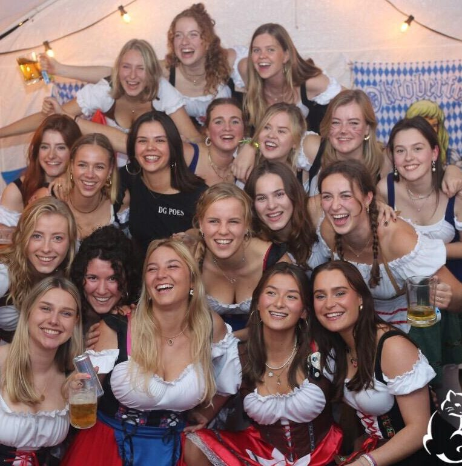
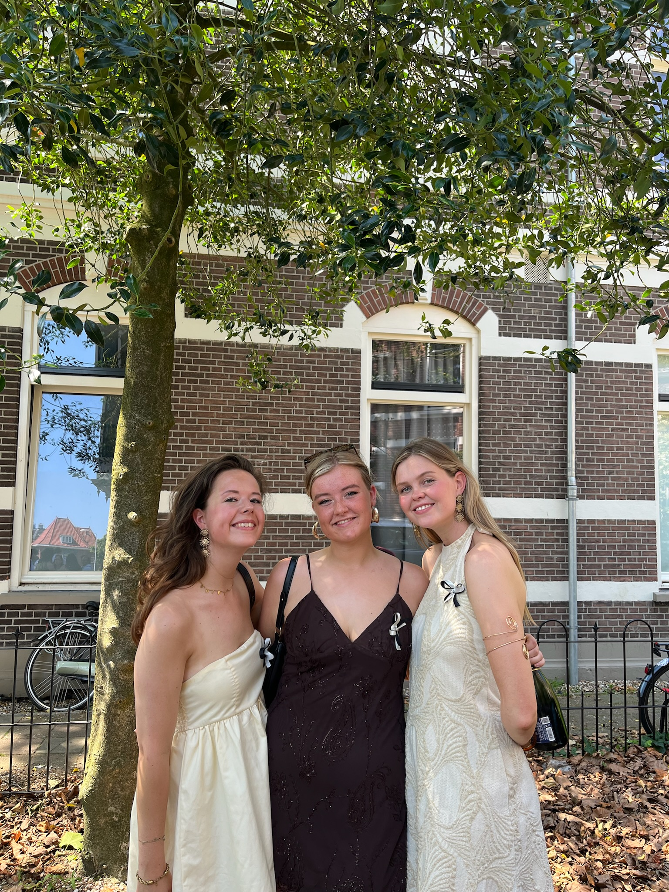
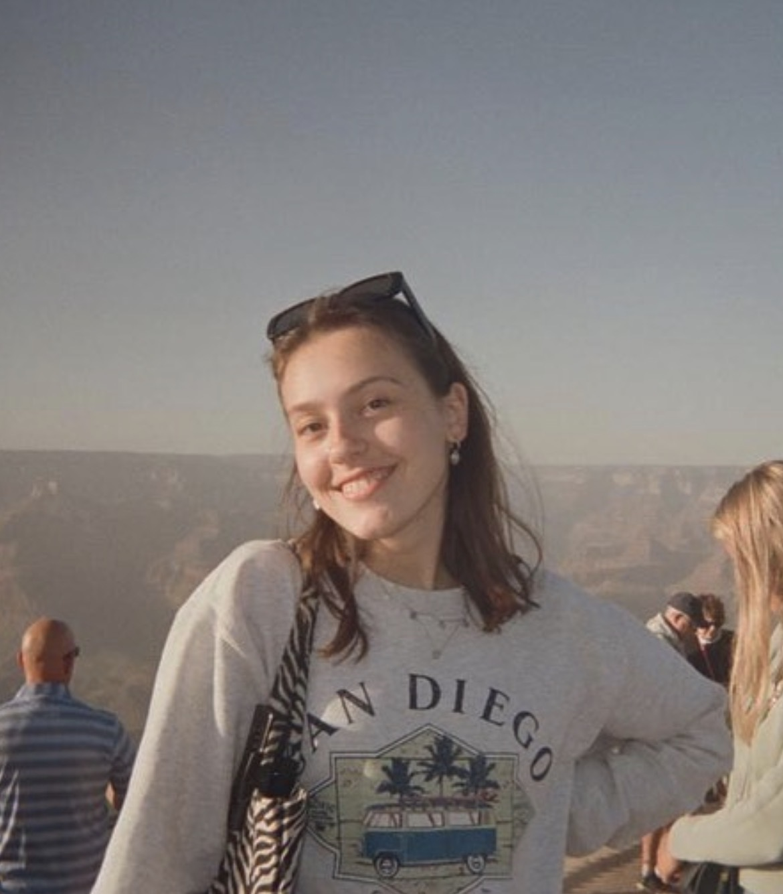
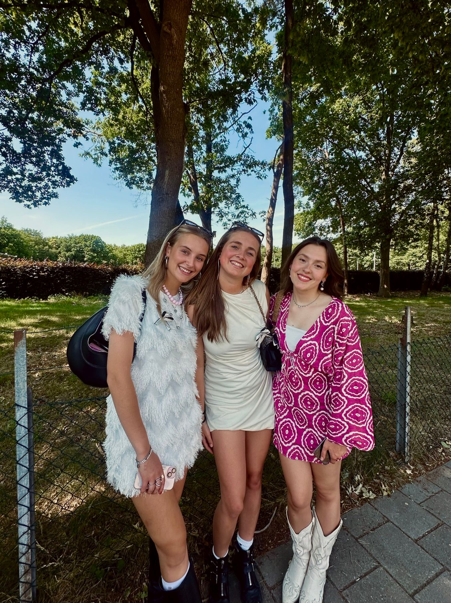
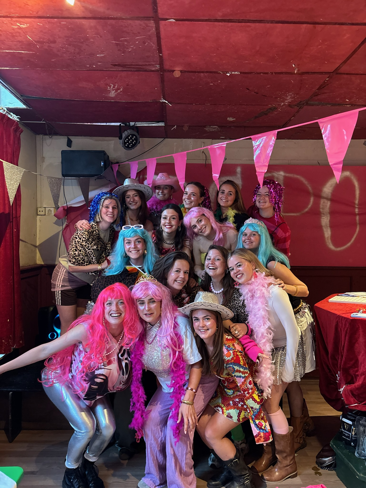
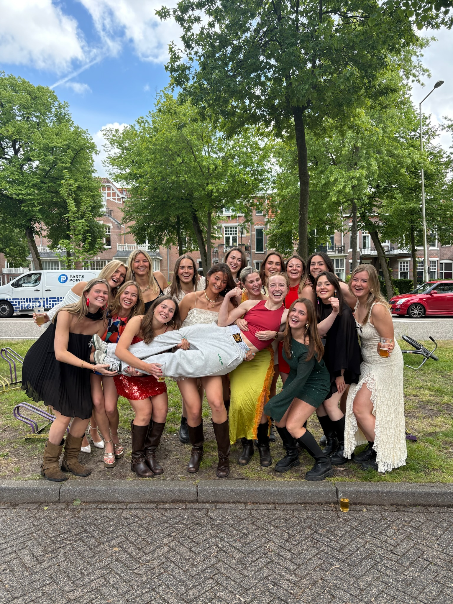

01Ein Prosit!
Oktoberfest
Volle pullen, worst met sauerkraut, Dirndls en alleen de beste foute Duitse hits. Eén avond lang voelt Nijmegen verdacht veel als München.
Jaarlijks in novemberDamesgenootschap · N.S.V. Ovum Novum

Oeps… geregeld!
Poes is een combinatie van heel verschillende vrouwen — en precies daarom werkt het.
De een wordt nét wat stoerder, de ander schreeuwt harder mee en weer een ander leert wanneer het tijd is voor rust. We dansen, borrelen, lachen om onszelf en beleven samen dingen die we alleen nooit hadden bedacht.
Iedere twee weken is het Poesavond. Maar eerlijk: voor een etentje, feestje, koffietje of spontaan avontuur is er altijd wel een Poes te vinden.
Ontmoet de PoezenSamen ondernemen we van alles: Poesweekend, het goededoelenfeest, diners, Oktoberfest, borrels, wintersport, Kater Komt Later Bingo en nog veel meer.

01Ein Prosit!
Volle pullen, worst met sauerkraut, Dirndls en alleen de beste foute Duitse hits. Eén avond lang voelt Nijmegen verdacht veel als München.
Jaarlijks in novemberFeest met impact
Feesten en tegelijk iets goeds doen. Eerdere edities steunden onder andere KWF, CliniClowns, Stichting Jarige Job en de Voedselbank Nijmegen.
Meer informatie 02
02
“Zonder kat geen kwaad.” Drie Poezen die dit jaar het genootschap draaiende houden.

“We krijgen het altijd voor elkaar een combinatie van zeer verschillende vrouwen te zijn. Een combinatie die werkt.”
Iedere Poes heeft haar eigen verhaal. Bekijk de leden afzonderlijk en ontdek wie samen een lichting vormen.


DJC FLINTH ’20

DJC Riskant ’20

DJC FLINTH ’20


DJC Venus ’21

DJC Venus ’21

DJC Nimra ’21

DJC Jolie ’21


DJC WAANZIN ’22

DJC Falena ’22


DJC Maeve ’23

DJC Allumé ’23

DJC Liyo ’23

DJC Maeve ’23

DJC Ohana ’23

DJC MAX ’23

DJC Ohana ’23


DJC Abrupt ’23

DJC Fiasco ’24

DJC Soleil ’24

DJC Fiasco ’24

DJC Flip ’24
Een paar momenten uit het Poesleven — soms netjes, meestal nét niet.





De verhalen, energie en vriendschap van Bianca en Myrna blijven voor altijd onderdeel van Poes. We dragen ze mee — op elk podium, op ieder avontuur en in alles wat we samen vieren.
Bianca · Myrna
@dgpoes